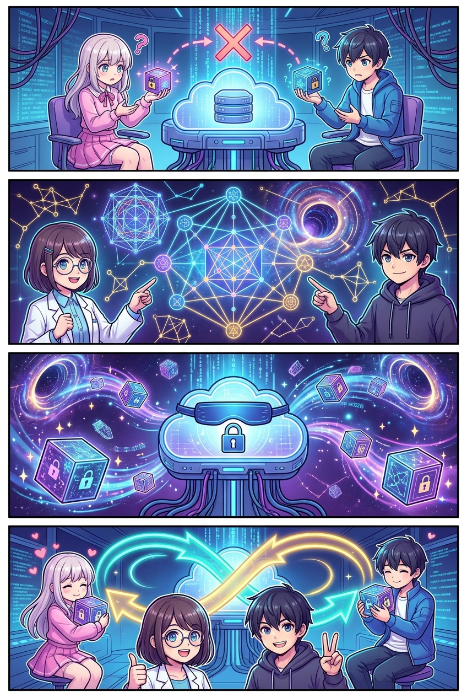
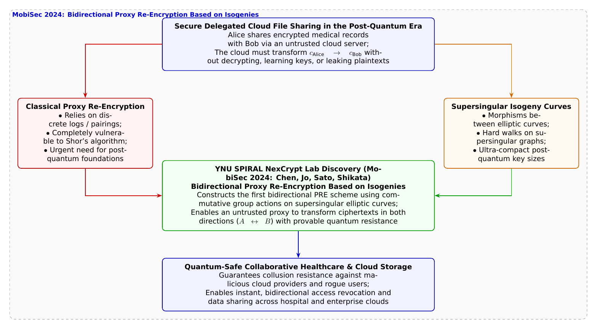

🎨 4コマ漫画挿絵（文字なし）
AI高解像度生成
▲ 【挿絵】青葉台高校 情報科学部＆帝都科学大学サイバーディフェンス・ラボでの実践シーン
💬 4コマ漫画キャラクターセリフ (Story Dialogue Script)
日・英バイリンガル (JA / EN)[葵]「クラウドの中身を盗み見されずに、耐量子暗号で別の相手宛てに変換できる魔法はないの！？」
[Aoi] "Can't the cloud securely transform ciphertexts between users without learning keys under quantum math!?"
[蓮]「しかも、アリスからボブへ、ボブからアリスへ、双方向に相互変換できる『双方向性（Bidirectional）』がクラウドには不可欠だ！」
[Ren] "And the cloud desperately needs Bidirectionality ($A \leftrightarrow B$) for fluid mutual collaboration!"
[結衣]「クラウドサーバーが共謀しても秘密鍵は絶対に漏洩せず、データは量子コンピュータに対しても永久に安全です！」
[Yui] "Even if the cloud colludes with attackers, secret keys remain impenetrable, and data is permanently quantum-proof!"
[蓮]「楕円曲線の幾何学が拓く、次世代クラウドの安心と絆だ！」
[Ren] "Elliptic curve geometry powering the next generation of trusted, quantum-safe cloud collaboration!"
📖 小説本文
冬晴れの放課後、青葉台高校の情報科学部室。神崎蓮がノートPCの画面で、クラウドストレージ上の暗号化ファイル共有システムをテストしていた。
「……葵先輩、たとえば僕が校舎裏のスマート農業ビニールハウスで収集した土壌の秘密データを、クラウドに暗号化したままアップロードしたとしますよね」
蓮が画面を指差しながら橘葵に語りかけた。
「そのデータを、後から共同研究者の白石結衣先輩に共有したくなったとします。どうすれば一番安全だと思いますか？」
「え？ 蓮くんが一旦手元で暗号を解除（復号）して、結衣ちゃんの公開鍵で暗号化し直してもう一度アップロードすればいいんじゃない？」葵が答える。
「葵先輩、それだとデータが何十ギガバイトもあったり、外出先でスマホの通信容量がカツカツだったり、僕の端末がオフラインだったときに共有が完全にストップしてしまいます」
「あ、そっか！ じゃあ……クラウドサーバーに『結衣ちゃん宛てに変換して！』ってお願いしたら？」
白石結衣が微笑みながら首を横に振った。
「葵先輩、もしクラウドサーバーに蓮くんの秘密鍵を教えて復号させたら、クラウド事業者のエンジニアや、クラウドに侵入したサイバー攻撃者に大切な生データが丸見えになってしまいます。そこで現代のクラウドセキュリティでは、クラウドに平文を一切見せることなく、暗号文のままアリス宛てからボブ宛てへと再暗号化させる**『プロキシ再暗号化（PRE: Proxy Re-Encryption）』**という技術が使われてきました」
「そう！ 映画を箱から出さずに、鍵穴だけを相手用に付け替えるような魔法だよね！」葵が思い出す。
「しかし」と蓮が声のトーンを落とした。「従来のPRE方式（RSAやペアリング暗号）には、致命的な弱点がありました。それらはすべて『離散対数問題』という古典的な数学に依存しているため、将来巨大な量子コンピュータが実用化された瞬間、過去に保存されたすべての暗号化データが一斉に解読されてしまうのです」
「耐量子暗号（PQC）への移行が急務とされる中で、格子暗号とは異なるもう一つの有力な幾何学的暗号パラダイム――それが**『同種写像暗号（Isogeny-based Cryptography）』**です」
結衣が黒板に、無数の楕円曲線が線で結ばれた複雑なグラフネットワークを描き出した。
「同種写像とは、ある楕円曲線から別の楕円曲線への代数的な写像（構造を保つ変換）のことです。超特異楕円曲線の同種写像グラフは極めて巨大かつランダムな迷路のようになっており、その間を結ぶ最短経路を見つけ出すことは、量子コンピュータをもってしても指数関数的な時間がかかります。鍵サイズが非常にコンパクトであることも大きな強みです」
「だが、同種写像の数学的構造を使って、クラウド上でアリスからボブへ、そしてボブからアリスへと自由にデータを相互共有できる『双方向のプロキシ再暗号化』を構成することは、世界中の数学者にとって極めて困難な挑戦だったんだ」
大学の講義を終えた城崎悠真が、いつもの頼もしい笑顔で部室に姿を現した。手には、2024年12月に国際会議『MobiSec 2024』で発表されたばかりの出来立ての論文が握られている。
「その未踏の領域を切り拓いたのが、横浜国立大学SPIRALの**陳家偉氏、趙亨騄氏、佐藤慎悟准教授、四方順司教授（NexCrypt Lab長）ら**の研究チームなんだ。**『Bidirectional Proxy Re-Encryption based on Isogenies（同種写像に基づく双方向プロキシ再暗号化）』**を発表し、国際的な注目を集めたんだよ」
悠真は論文のアーキテクチャ図をモニターに映し出した。
「研究チームは、超特異楕円曲線の同種写像に対する可換な群作用（Group Actions）の美しい代数法則を活用したんだ。アリスとボブが互いに『再暗号化鍵』を生成してクラウドに預けると、クラウドは二人の秘密鍵を知ることなく、アリスの暗号文をボブの暗号文へ、そしてボブの暗号文をアリスの暗号文へと、**双方向（Bidirectional）**に自由自在に再暗号化変換できる。しかも、悪意あるクラウドと悪意ある第三者が共謀しても、利用者の秘密鍵が漏洩しないことが厳密に証明されたんだ」
蓮が即座に、同種写像PREのシミュレータを走らせた。
クラウド役のローカルサーバー上で、蓮の秘密データが一度も復号されることなく、瞬時に結衣の公開鍵構造へと同種写像の迷路を潜り抜けて変換される。結衣が手元の端末でワンタップすると、正確なテレメトリグラフが鮮やかに画面に描画された。
「すごい……！ クラウドには1ミリも中身を見せていないのに、完全な耐量子性を持ったまま、僕たちの間で安全なデータの架け橋が開通した！」蓮が声を弾ませた。
「誰かを信じ切るのではなく、数学の確かな架け橋によって、お互いの絆をより強く結び直す……。これこそが、未来のクラウドが目指すべきゼロトラストの姿ですね」
結衣の優しい言葉に、葵も悠真も蓮も、温かい笑顔を交わし合った。夕暮れの空に浮かぶ白い雲を見上げながら、部室の四人は、幾何学の深遠な美しさが拓く次世代の安心に、確かな希望を感じ取っていた。
---
📊 セキュリティ構造図解 (TikZ LuaLaTeX生成)
国家安全基準・工学図解
▲ 【技術構造図】IPAデジタルスキル標準・国際規格に準拠した仕組みのモデル化